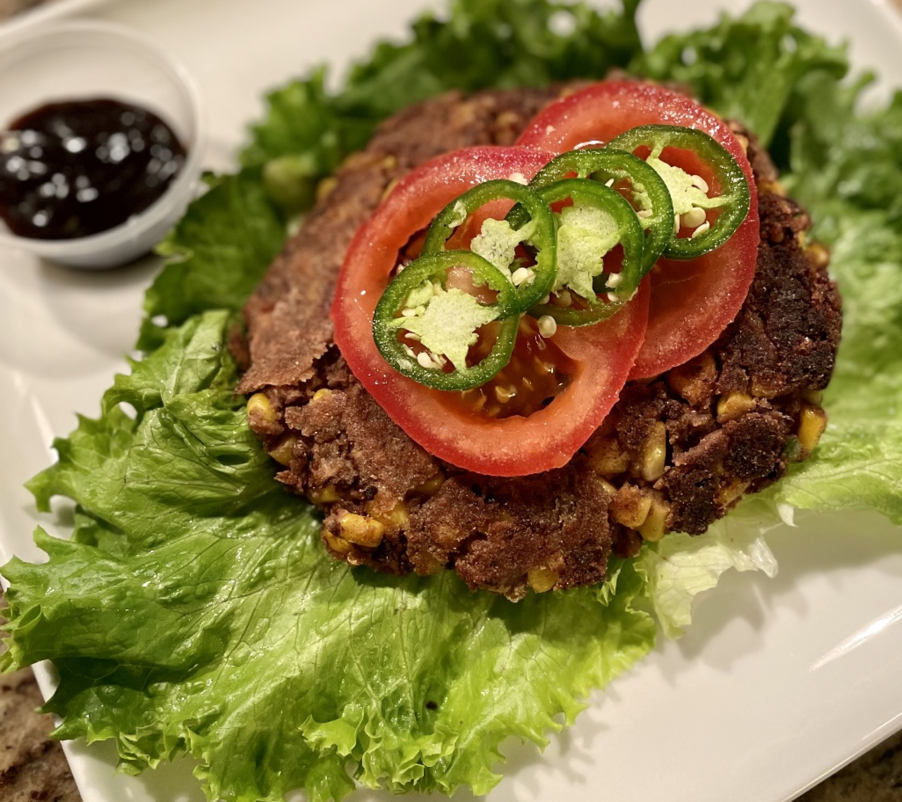

Spicy Black Bean Burger

Ingredients
- 1 egg
- 1½ tablespoons ground cumin
- 1 tablespoon chili powder
- 1 teaspoon chile-garlic sauce (such as Sriracha®)
- 1 (16 ounce) can black beans, rinsed and drained
- 1 jalapeno pepper, minced
- 1 cup canned whole kernel corn, drained
- 3 cloves garlic, minced
- ½ cup bread crumbs
- ½ cup whole wheat flour
- 2 tablespoons vegetable oil
Directions
- Whisk egg, cumin, chili powder, and chile-garlic sauce together in a bowl.
- Mash black beans in a separate bowl until they reach a paste-like consistency.
- Stir jalapeno pepper, corn, and garlic through the black bean paste.
- Mix the egg mixture into the black bean mixture.
- Scatter the bread crumbs over the black bean mixture; mix with your hands to evenly incorporate.
- Form the resulting mixture into 4 patties.
- Pour flour into the bottom of a shallow dish; coat the patties in the flour to help them hold shape.
- Heat vegetable oil in a skillet over medium heat. Cook the patties in hot oil until cooked through, about 5 minutes per side.